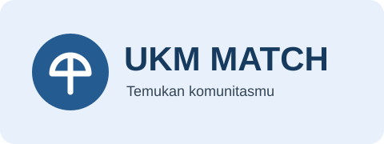

Selamat Datang di UKM MATCH

UKM MATCH membantu mahasiswa ITPLN mengenal berbagai Unit Kegiatan Mahasiswa dan menemukan komunitas yang sesuai dengan minat serta bakat mereka.
Mengapa Bergabung dengan UKM?
Melalui kegiatan UKM, mahasiswa dapat mengembangkan kemampuan di luar perkuliahan, memperoleh pengalaman, dan membangun relasi.
Manfaat bergabung dengan UKM
- Mengembangkan minat dan bakat.
- Menambah pengalaman berorganisasi.
- Memperluas pertemanan dan relasi.
- Melatih kerja sama dan tanggung jawab.
Mulai Temukan Komunitasmu
Jelajahi pilihan komunitas di halaman Daftar UKM atau lihat persyaratan dan contoh jadwal rekrutmen di halaman pendaftaran.